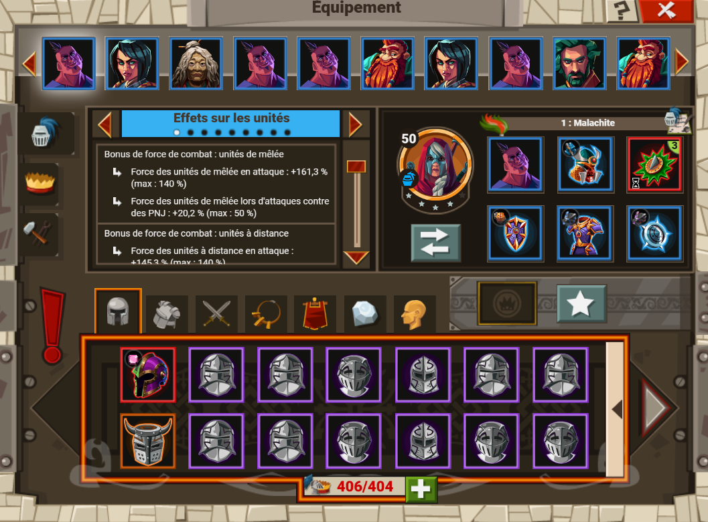
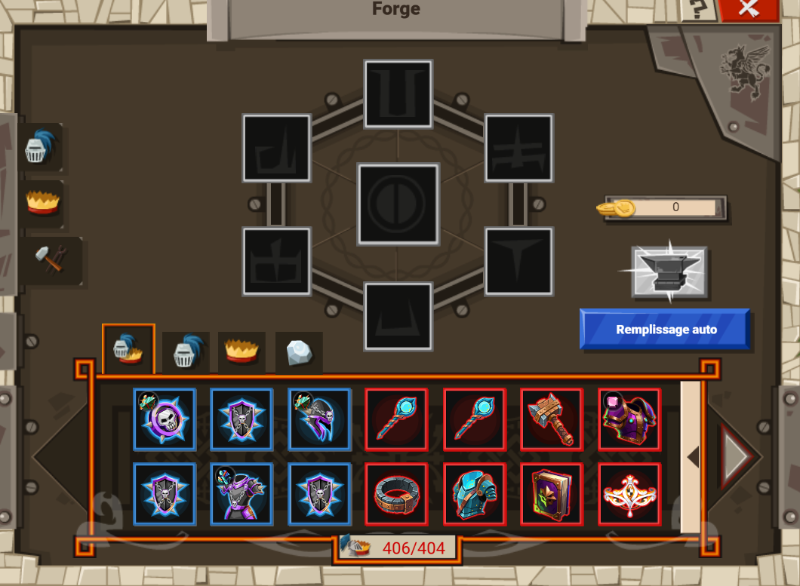

Equipements

Présentation
L'équipements des commandants et baillis permet de les renforcer, en leur conférant des effets soit militaires (forces de combat, limite de soso sur les flancs) soit civile (bonus de prod, d'ordre publique).
L'équipement, commandant ou baillis, relique ou arme, est regroupé en 6 catégories de rareté :
- commun
- rare
- épique
- légendaire
- unique
- relique
commun
C'est le premier palier d'équipement, le plus simple à obtenir. Vendre une pièce déquipement commun rapporte 25 pièces.
rare
C'est le second palier d'équipement, le plus dur à obtenir. Vendre une pièce déquipement commun rapporte 100 pièces.
épique
C'est le troisième palier d'équipement. Vendre une pièce déquipement commun rapporte 1000 pièces.
légendaire
C'est le quatrième palier d'équipement. Vendre une pièce déquipement commun rapporte 6000 pièces.
unique
C'est le cinquième palier d'équipement. Vendre une pièce déquipement commun rapporte 1200 pièces.
relique
C'est le sixième palier d'équipement, le plus dur à obtenir. Vendre une pièce déquipement commun rapporte des éclats e relique.
Comment en obtenir ?
Il y a plusieurs moyens permettant d'obtenir des pièces d'équipements :
- les quêtes
- le pillage
- le forgeron
- les boutiques
Les quêtes
Certines quêtes permettent d'obtenir des pièces d'équipements en récompense. Parfois aléatoires (?) ou connues d'avance. il y a des quêtes courantes et d'évènement.
le pillage
En attaquant un PNJ (fieffé, tour, camp nomade/samouraï) il y a en récompenses le pillage classique (ressources) et en plus une pièce d'équipement, ou une gemme à partir du lvl 25.
le forgeron
Via l'aperçu de l'équipement, on peut accéder au forgeron. Il y a deux possibilitées :
Créer une pièce d'quipement à paartir de 3 pièces de même valeur une pièce de même valeur. Exemple : trois pièces rares vont donner une pièces rare.
Créer une pièce d'quipement de qualité supérieure à partir de 6 pièces de même valeur. Exemple : six pièces rares pour une pièce épique.
Créer une gemme de qualité supérieure à partir de six gemmes de qualité égale. Bonus : plus le niveau de la gemme est haut, plus le tux de réussite de forgeavec des pièces est faible.


les boutiques
Ce terme de boutique regoupe plusieurs personnages/event :
- le marchand d'équipements
- le maître forgeron
- les boutiques d'évènements
- les évènements
Le marchand d'équipements
Contre des rubis ou des pièces, on peut y acheter des pièces d'équipements en set ou à l'unité.